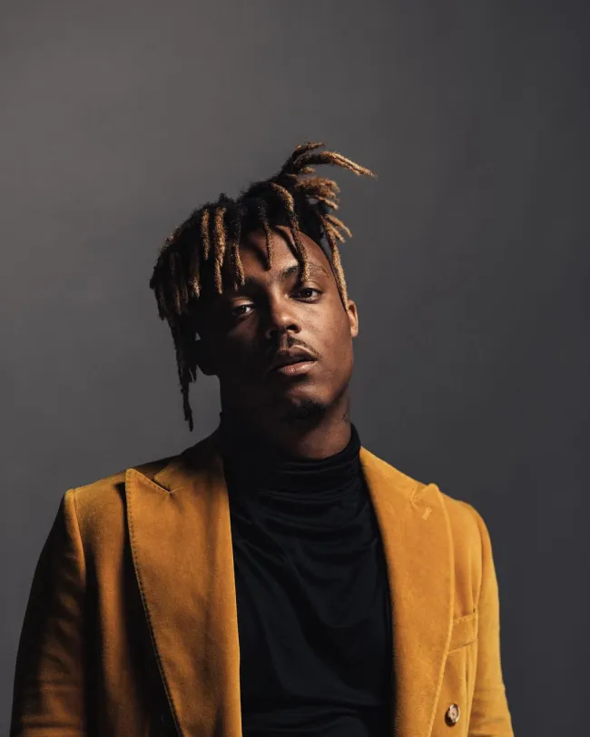

Juice Wrld

Jarad Anthony Higgins, conhecido por seu nome artístico Juice Wrld, foi um rapper, cantor e compositor norte-americano. Foi conhecido por seus singles de sucesso All Girls Are the Same e Lucid Dreams, que o ajudaram a ganhar um contrato de gravação com a Grade A Productions, de Lil Bibby, e a Interscope Records.